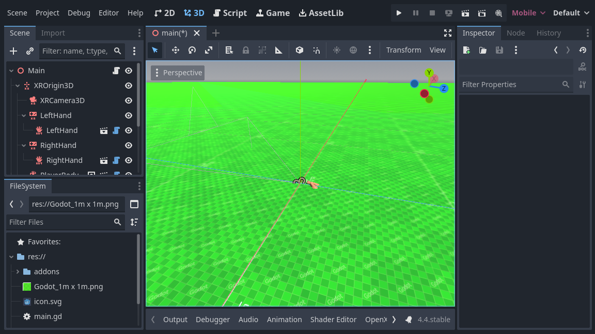

Basic XR Locomotion
For basic locomotion we're going to continue using our Godot XR Tools library. The library contains both basic movement features as more advanced features.
Adding our player body
The first step we need to do is to add a helper node to our XROrigin3D node.
Because XR supports roomscale tracking you can't simply add your XR setup to a CharacterBody3D node and expect things to work.
You will run into trouble when the user moves around their physical space and is no longer standing in the center of their room.
Godot XR Tools embeds the needed logic into a helper node called PlayerBody.
Select your XROrigin3D node and click on the button to add a child scene.
Select addons/godot-xr-tools/player/player_body.tscn and add this node.
Adding a floor
This node governs the in game movement of your character and will immediately react to gravity. So to prevent our player from infinitely falling down we'll quickly add a floor to our scene.
We start by adding a StaticBody3D node to our root node and we rename this to Floor.
We add a MeshInstance3D node as a child node for our Floor.
Then create a new PlaneMesh as its mesh.
For now we set the size of the mesh to 100 x 100 meters.
Next we add a CollisionShape3D node as a child node for our Floor.
Then create a BoxShape as our shape.
We set the size of this box shape to 100 x 1 x 100 meters.
We also need to move our collision shape down by 0.5 meters so the top of our box is flush with the floor.
To make it easier to see that we're actually moving around our world, a white floor isn't going to do it. Create a texture using Wahooneys excellent free texture generator. Once you've created the texture add it to your project. Then create a new material for the MeshInstance3D node, add your texture as the albedo, and enable Triplanar under UV1 in the material properties.

Direct movement
We're going to start adding some basic direct movement to our setup. This allows the user to move through the virtual world using joystick input.
Note
It is important to note that moving through the virtual world while the player is standing still in the real world, can be nausea inducing especially for players who are new to VR. The default settings on our movement functions are fairly conservative. We advise you to stick to these defaults but offer features in game to enable less comfortable settings for more experienced users who are used to playing VR games.
We want to enable this on the right hand controller.
We do this by adding a subscene to the right hand XRController3D node.
Select addons/godot-xr-tools/functions/movement_direct.tscn as the scene to add.
This function adds forward and backwards movement to the player by using the joystick on the right hand controller. It has an option to also add left/right strafe but by default this is disabled.
Instead, we are going to add the ability for the player to also turn with this joystick.
We will add another subscene to our controller node, select addons/godot-xr-tools/functions/movement_turn.tscn for this.
The turn system by default uses a snap turn approach.
This means that turning happens in steps.
This may seem jarring however it is a tried and tested method of combating motion sickness.
You can easily switch to a mode that offers smooth turning by changing the mode property on the turn node.
If you run your game at this point in time you will find that you can move through the world freely using the right hand joystick.
Teleport
An alternative to direct movement that some users find more pleasant is the ability to teleport to another location within your game world. Godot XR Tools supports this through the teleport function and we will be adding this to our left hand controller.
Add a new child scene to your left hand XRController3D node by selecting the addons/godot-xr-tools/functions/function_teleport.tscn scene.
With this scene added the player will be able to teleport around the world by pressing the trigger on the left hand controller, pointing where they want to go, and then releasing the trigger. The player can also adjust the orientation by using the left hand controller's joystick.
If you've followed all instructions correctly your scene should now look something like this:

More advanced movement features
Godot XR Tools adds many more movement features such as gliding, a grapple hook implementation, a jetpack, climbing mechanics, etc.
Most work similarly to the basic movement features we've handled so far, simply add the relevant subscene from the plugin to the controller that implements it.
We'll look at some of these in more detail later on in this tutorial where additional setup is required (such as climbing) but for others please look at Godot XR Tools own help pages for details.